P = 1400 # present worth
i = 0.04 # interest rate
n = 6 # number of years
F = P * (1 + i) ** n
print(round(F, 2))1771.451000 دينار اليوم تساوي أكثر من 1000 دينار بعد سنة، لأنك تستطيع استثمارها اليوم وتحصل على فائدة. هذه الفكرة أساس كل الكتاب. في هذا الفصل تتعلم نقل مبلغ واحد من سنة إلى أخرى، ثم جمع عدة مبالغ في سنة واحدة، ثم إيجاد نسبة الفائدة أو عدد السنوات إذا كانت مجهولة. تحل كل مسألة بثلاث طرق: المعادلة، وExcel، وPython.
الفائدة ثمن استخدام المال. المقترض يدفعها للمقرض، والمستثمر يحصل عليها. نسبة الفائدة i هي الفائدة في سنة واحدة مقسومة على المبلغ.
في الفائدة البسيطة تحسب الفائدة كل سنة على المبلغ الأصلي فقط:
في الفائدة المركبة تحسب الفائدة كل سنة على الرصيد كله، أي على المبلغ الأصلي مع الفوائد المتراكمة. البنوك والمشاريع تعمل بالفائدة المركبة، وكل الكتاب بعد هذا القسم يستخدمها.
مثال 1.1: الفائدة البسيطة والمركبة على قرض
اقترض شخص 5,000 دينار من البنك لمدة 3 سنوات بفائدة 10% سنويا. كم يدفع للبنك في نهاية السنة الثالثة إذا كانت الفائدة بسيطة؟ وكم يدفع إذا كانت مركبة؟
الحل:
في الفائدة البسيطة تحسب الفائدة كل سنة على المبلغ الأصلي فقط. الفائدة السنوية:
والمبلغ في نهاية السنة الثالثة:
في الفائدة المركبة تحسب الفائدة كل سنة على الرصيد في بداية السنة، أي على المبلغ الأصلي مع الفوائد المتراكمة:
| السنة | الرصيد في بداية السنة (دينار) | الفائدة (دينار) | الرصيد في نهاية السنة (دينار) |
|---|---|---|---|
| 1 | 5,000.00 | 500.00 | 5,500.00 |
| 2 | 5,500.00 | 550.00 | 6,050.00 |
| 3 | 6,050.00 | 605.00 | 6,655.00 |
يدفع الشخص 6,500.00 دينار بالفائدة البسيطة، و6,655.00 دينار بالفائدة المركبة. الفرق 155.00 دينار، وهو فائدة على الفائدة. البنوك تعمل بالفائدة المركبة، وهي المعتمدة في باقي الكتاب.
مثال 1.2: قرض بفائدة بسيطة
اقترض صاحب ورشة 3,000 دينار من تاجر، على أن يرده بعد 4 سنوات مع فائدة بسيطة 6% سنويا. ما مجموع الفائدة؟ وكم يدفع في النهاية؟
الحل:
الفائدة البسيطة لا تتراكم، فمجموعها يساوي الفائدة السنوية مضروبة في عدد السنوات:
يدفع صاحب الورشة 3,720.00 دينار في نهاية السنة 4.
مثال 1.3: أثر الفائدة المركبة على المدى الطويل
استثمر شخص 1,000 دينار لمدة 20 سنة بعائد 8% سنويا. قارن المبلغ في النهاية بالفائدة البسيطة وبالفائدة المركبة.
الحل:
بالفائدة البسيطة:
بالفائدة المركبة:
الفرق 2,060.96 دينار، والمبلغ بالفائدة المركبة يساوي 1.79 ضعف المبلغ بالفائدة البسيطة. كلما طالت المدة كبر الفرق، لأن الفائدة على الفائدة تتراكم كل سنة.
الحساب سنة بسنة كما في الجدول السابق يطول عندما تكون المدة طويلة. في كل سنة يضرب الرصيد في المقدار التالي:
فبعد n سنة يصبح الرصيد:
حيث:
| الرمز | المعنى |
|---|---|
| P | القيمة الحالية: المبلغ في السنة 0 |
| F | القيمة المستقبلية: المبلغ في نهاية السنة n |
| i | نسبة الفائدة السنوية المركبة |
| n | عدد السنوات |
المضروب في P يسمى معامل القيمة المستقبلية لمبلغ واحد، ويكتب بالرمز التالي، ويقرأ “F إلى P عند i و n”:
فيصبح القانون:
جداول المعاملات في الملحق تعطي قيم المعامل لنسب وسنوات مختلفة. القانون والجداول يعطيان نفس الجواب، والفرق الوحيد أن الجداول مقربة لأربع خانات عشرية.
مثال 1.4: حساب توفير
وضع شخص 1,400 دينار في حساب توفير بفائدة 4% سنويا. كم يصبح في الحساب بعد 6 سنوات؟
الحل:
المعطيات:
بالمعادلة:
بالجداول، نقرأ المعامل من صف 4% وعمود 6:
في Excel:
=FV(4%, 6, 0, -1400)في Python:
P, i, n = 1400, 0.04, 6
F = P * (1 + i) ** n
print(round(F, 2)) # 1771.45يصبح في الحساب 1,771.45 دينار.
مثال 1.5: مبلغ محجوز لشراء معدات
خصصت شركة مقاولات 25,000 دينار اليوم لشراء معدات بعد 10 سنوات، واستثمرت المبلغ بعائد 7% سنويا. كم يصبح المبلغ عند الشراء؟ وكم منه أرباح استثمار؟
الحل:
أرباح الاستثمار هي الفرق بين المبلغ النهائي والمبلغ الأصلي:
في Excel:
=FV(7%, 10, 0, -25000)يصبح المبلغ 49,178.78 دينار، منها 24,178.78 دينار أرباح.
القانون لا يخص المال المستثمر وحده. أي كمية تزيد بنسبة ثابتة كل سنة تتبع نفس القانون، مثل سعر سلعة يرتفع كل سنة.
مثال 1.6: سعر قطعة غيار بعد سنوات
سعر قطعة غيار لآلة تعبئة اليوم 840 دينار، ويرتفع سعرها 5% كل سنة. كم يتوقع أن يكون سعرها بعد 6 سنوات؟
الحل:
زيادة السعر بنسبة ثابتة كل سنة تتراكم مثل الفائدة المركبة، فنستخدم نفس القانون، ونضع نسبة الزيادة مكان نسبة الفائدة:
في Excel:
=FV(5%, 6, 0, -840)السعر المتوقع 1,125.68 دينار.
أحيانا تعرف المبلغ في المستقبل وتريد قيمته اليوم. نقسم طرفي قانون القيمة المستقبلية على معامل القيمة المستقبلية:
المعاملان مقلوبان لبعضهما:
نقل المال للأمام في الزمن يكبره، ونقله للخلف يصغره. هذه قاعدة تحقق سريعة: إذا نقلت مبلغا للخلف وظهر جوابك أكبر منه، فهناك خطأ.
مثال 1.7: كم تستثمر اليوم لهدف مستقبلي؟
يحتاج شخص 10,000 دينار بعد 4 سنوات. كم يجب أن يستثمر اليوم إذا كان العائد 7% سنويا؟
الحل:
المجهول هنا القيمة الحالية:
بالجداول:
في Excel:
=PV(7%, 4, 0, -10000)في Python:
F, i, n = 10000, 0.07, 4
P = F / (1 + i) ** n
print(round(P, 2)) # 7628.95يستثمر اليوم 7,628.95 دينار.
مثال 1.8: تمويل خط إنتاج مستقبلي
تتوقع شركة أن تحتاج 370,000 دينار بعد 4 سنوات لشراء خط إنتاج. كم يجب أن تستثمر اليوم إذا حصلت على عائد 18% سنويا؟
الحل:
في Excel:
=PV(18%, 4, 0, -370000)إذا استثمرت الشركة 190,841.88 دينار اليوم بعائد 18%، يصبح المبلغ 370,000 دينار في نهاية السنة 4.
مثال 1.9: مبلغ اليوم أم مبلغ أكبر لاحقا؟
عرض على مالك أرض عرضان لشرائها: 12,000 دينار اليوم، أو 15,000 دينار بعد 3 سنوات. إذا كان المالك يستطيع استثمار المال بعائد 8% سنويا، أي العرضين أفضل؟
الحل:
لا نقارن مبلغين في سنتين مختلفتين. ننقل العرض الثاني إلى اليوم:
العرض الأول قيمته اليوم 12,000 دينار، والعرض الثاني قيمته اليوم 11,907.48 دينار. العرض الأول أفضل بفرق 92.52 دينار بقيمة اليوم.
في Excel:
=PV(8%, 3, 0, -15000)Excel يحتوي على دوال جاهزة لكل قوانين الاقتصاد الهندسي. الدالة FV تحسب القيمة المستقبلية، والدالة PV تحسب القيمة الحالية:
=FV(rate, nper, pmt, pv)
=PV(rate, nper, pmt, fv)| المدخل | المعنى |
|---|---|
| rate | نسبة الفائدة i |
| nper | عدد السنوات n |
| pmt | الدفعة السنوية المتكررة، وتكون 0 في هذا الفصل |
| pv أو fv | المبلغ المنقول، بإشارة معكوسة |
ثلاث قواعد قبل أن تكمل:
مثال 1.10: إشارة المبلغ في Excel
كتب طالب الصيغة التالية لحساب القيمة المستقبلية لمبلغ 2,500 دينار بعد 5 سنوات بفائدة 6%:
=FV(6%, 5, 0, 2500)فظهر له الجواب سالبا وبلون أحمر. هل الجواب خطأ؟
الحل:
الرقم صحيح، والإشارة فقط معكوسة. Excel يتعامل مع المسألة كحركة نقدية بين طرفين: إذا أدخلت المبلغ موجبا، فهو يعتبره مالا دخل إليك اليوم، فيكون الجواب مالا يخرج منك في المستقبل، أي سالبا.
لكي يظهر الجواب موجبا، اكتب المبلغ بإشارة سالبة، لأنه مال خرج منك إلى الاستثمار:
=FV(6%, 5, 0, -2500)والجواب في الحالتين قيمته 3,345.56 دينار.
Python لغة برمجة مجانية، وتستخدمها الشركات لتحليل البيانات وبناء النماذج المالية. في هذا الكتاب تستخدمها بطريقتين: تكتب القانون بنفسك، ثم تستخدم مكتبة جاهزة اسمها numpy_financial فيها نفس دوال Excel.
لتشغيل الأمثلة تحتاج Python مثبتة على جهازك، أو تستخدم Google Colab من المتصفح بدون تثبيت. لتثبيت المكتبة:
pip install numpy-financialفي Python تكتب الأس بنجمتين متتاليتين. قانون القيمة المستقبلية يكتب هكذا:
P = 1400 # present worth
i = 0.04 # interest rate
n = 6 # number of years
F = P * (1 + i) ** n
print(round(F, 2))1771.45نسبة الفائدة تكتب كسرا عشريا: 4% تكتب 0.04.
إذا كنت ستستخدم القانون كثيرا، اكتبه مرة واحدة كدالة، ثم استدعها بأرقام مختلفة:
def FP(i, n):
"""Future worth factor, single payment"""
return (1 + i) ** n
def PF(i, n):
"""Present worth factor, single payment"""
return 1 / (1 + i) ** n
print(round(1400 * FP(0.04, 6), 2))
print(round(10000 * PF(0.07, 4), 2))1771.45
7628.95الحلقة for تكرر نفس الحساب لكل سنة. هكذا تبني جدول الرصيد سنة بسنة، مثل جدول المثال الأول:
P, i = 5000, 0.10
balance = P
for year in range(1, 4):
interest = balance * i
balance = balance + interest
print(year, round(interest, 2), round(balance, 2))1 500.0 5500.0
2 550.0 6050.0
3 605.0 6655.0المكتبة فيها دوال بنفس أسماء دوال Excel ونفس اتفاقية الإشارة:
import numpy_financial as npf
print(round(npf.fv(0.04, 6, 0, -1400), 2)) # same as FV in Excel
print(round(npf.pv(0.07, 4, 0, -10000), 2)) # same as PV in Excel
print(round(npf.rate(5, 0, -1000, 1500), 4)) # same as RATE in Excel
print(round(npf.nper(0.08, 0, -1, 2), 2)) # same as NPER in Excel1771.45
7628.95
0.0845
9.01متى تستخدم Python بدل Excel؟ عندما تكرر نفس الحساب مئات المرات، أو تريد أن تغير المدخلات وترى أثرها على الجواب، أو تعمل على بيانات كبيرة. في الفصول القادمة تبني بها جداول القروض وتحليل الحساسية.
قبل حل أي مسألة فيها أكثر من مبلغ، ارسم مخطط التدفق النقدي. المخطط يتكون من:
اتفاقية مهمة: كل مبلغ يقع في نهاية سنته. “في السنة 3” تعني نهاية السنة الثالثة، وهي نفس لحظة بداية السنة الرابعة.
مثال 1.11: مبلغان في سنتين مختلفتين
استثمر شخص 1,000 دينار اليوم، ثم استثمر 1,200 دينار في نهاية السنة 4. كم يصبح لديه في نهاية السنة 7 إذا كان العائد 5% سنويا؟
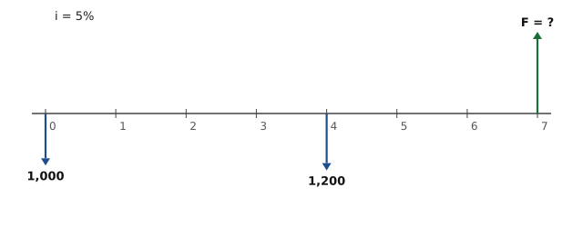
الحل:
القاعدة: لا تجمع مبلغين في سنتين مختلفتين. انقل كل مبلغ إلى السنة 7 أولا، ثم اجمع.
المبلغ الأول يبقى 7 سنوات في الاستثمار:
والمبلغ الثاني يبقى 3 سنوات:
في Excel نطبق الدالة مرتين في نفس الخلية:
=FV(5%, 7, 0, -1000) + FV(5%, 3, 0, -1200)يصبح لديه 2,796.25 دينار. إذا استخدمت معاملات الجداول المقربة لأربع خانات، تحصل على 2,796.22 دينار، والفرق سببه التقريب.
مثال 1.12: القيمة الحالية لعدة مبالغ
يتوقع مصنع أن يحصل على 4,000 دينار في نهاية السنة 1، و6,000 دينار في نهاية السنة 3، و9,000 دينار في نهاية السنة 5. ما القيمة الحالية لهذه المبالغ إذا كانت الفائدة 9% سنويا؟
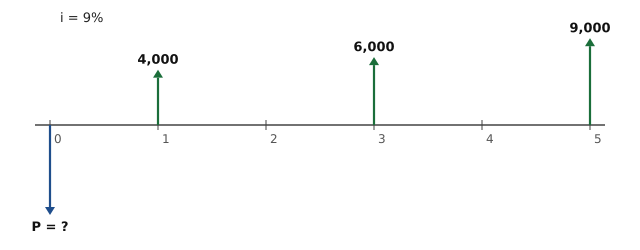
الحل:
ننقل كل مبلغ إلى السنة 0 وحده، ثم نجمع:
في Excel:
=PV(9%, 1, 0, -4000) + PV(9%, 3, 0, -6000) + PV(9%, 5, 0, -9000)القيمة الحالية 14,152.21 دينار.
مبلغان أو مجموعتان من المبالغ متكافئتان إذا تساوت قيمتهما عند نقلهما إلى نفس السنة بنفس نسبة الفائدة. خطوات حل أي مسألة تكافؤ:
مثال 1.13: أكبر قرض إضافي
اقترض شخص 5,000 دينار بفائدة 3% سنويا. في نهاية السنة 2 احتاج مبلغا إضافيا، فوافق البنك على قرض ثان، بشرط أن يسدد كل الدين بدفعة واحدة قدرها 10,000 دينار في نهاية السنة 5. ما أكبر مبلغ يستطيع اقتراضه في السنة 2؟
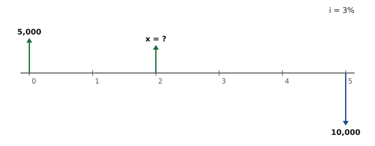
الحل:
نختار السنة 2 للمقارنة، لأن المجهول يقع فيها. ما استلمه الشخص يجب أن يكافئ ما سيدفعه. القرض الأول ينتقل للأمام سنتين، والدفعة النهائية تنتقل للخلف 3 سنوات:
في Excel:
=PV(3%, 3, 0, -10000) - FV(3%, 2, 0, -5000)يستطيع الشخص اقتراض 3,846.92 دينار إضافية في نهاية السنة 2.
مثال 1.14: تكافؤ تدفقات مشروع في سنة واحدة
الجدول التالي يعرض تكاليف مشروع بالدينار، ونسبة الفائدة 10%. (أ) احسب القيمة المكافئة لكل التكاليف في السنة 2. (ب) احسب القيمة المكافئة في السنة 5 باستخدام Excel.
| السنة | 0 | 1 | 2 | 3 | 4 | 5 | 6 |
|---|---|---|---|---|---|---|---|
| التدفق (دينار) | -500 | -250 | -125 | 0 | 0 | -125 | -175 |
الحل:
(أ) السنتان 0 و1 تنتقلان للأمام، والسنتان 5 و6 تنتقلان للخلف، وتدفق السنة 2 يبقى كما هو:
(ب) في Excel، اكتب السنوات في الصف 1 من العمود B إلى العمود H، والتدفقات في الصف 2. في الخلية B3 اكتب الصيغة التالية، ثم اسحبها لليمين حتى الخلية H3:
=FV(10%, 5-B1, 0, -B2)الجزء الثاني من الصيغة يحسب عدد السنوات بين سنة التدفق والسنة 5. للسنة 6 يصبح سالبا، وExcel يفهم العدد السالب نقلا للخلف. ثم اجمع الصف 3:
=SUM(B3:H3)| السنة | 0 | 1 | 2 | 3 | 4 | 5 | 6 |
|---|---|---|---|---|---|---|---|
| القيمة في السنة 5 | -805.26 | -366.03 | -166.38 | 0 | 0 | -125.00 | -159.09 |
المجموع -1,621.75 دينار.
تحقق من الجوابين: نقل جواب (أ) من السنة 2 إلى السنة 5 يجب أن يعطي جواب (ب):
هذا الاختبار مفيد لكل مسائل التكافؤ.
مثال 1.15: سداد قرض بدفعتين
اقترض مهندس 60,000 دينار بفائدة 7% سنويا، ويريد سداده بدفعتين: الأولى في نهاية السنة 2، والثانية في نهاية السنة 5. الدفعة الأولى تساوي نصف الثانية. أوجد الدفعتين.
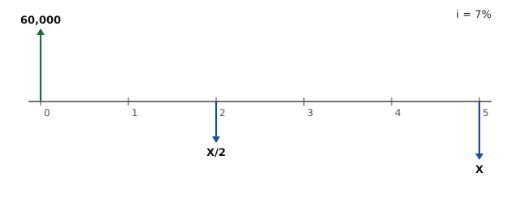
الحل:
نسمي الدفعة الثانية X، فتكون الأولى X/2. نختار السنة 0 للمقارنة: القيمة الحالية للدفعتين تساوي مبلغ القرض.
في Python نكتب المعادلة كما هي:
L, i = 60000, 0.07
X = L / (0.5 / (1 + i) ** 2 + 1 / (1 + i) ** 5)
print(round(X / 2, 2), round(X, 2))الدفعة الأولى 26,093.64 دينار، والثانية 52,187.28 دينار.
مثال 1.16: سنة المقارنة لا تغير القرار
تعويض تأمين يمكن استلامه بطريقتين: 20,000 دينار اليوم، أو 27,000 دينار بعد 4 سنوات. الفائدة 6%. قارن الطريقتين في السنة 0، ثم في السنة 4.
الحل:
المقارنة في السنة 0:
المقارنة في السنة 4:
في الحالتين الدفعة المؤجلة أفضل. اختيار سنة المقارنة يغير الأرقام، لكنه لا يغير القرار، لأن كل الأرقام تضرب في نفس المعامل.
قانون القيمة المستقبلية فيه أربعة متغيرات: P و F و i و n. إذا عرفت ثلاثة منها، تستطيع إيجاد الرابع. لإيجاد نسبة الفائدة:
ولإيجاد عدد السنوات نأخذ اللوغاريتم الطبيعي للطرفين:
في Excel الدالة RATE تعطي نسبة الفائدة، والدالة NPER تعطي عدد السنوات.
مثال 1.17: إيجاد نسبة العائد
استثمر شخص 1,000 دينار فأصبحت 1,500 دينار بعد 5 سنوات. ما نسبة العائد السنوية؟
الحل:
نحل قانون القيمة المستقبلية لإيجاد نسبة الفائدة:
في Excel:
=RATE(5, 0, -1000, 1500)نسبة العائد 8.45% سنويا.
مثال 1.18: متى يتضاعف المبلغ؟
كم سنة يحتاج المبلغ ليتضاعف إذا كانت الفائدة 8% سنويا؟ قارن الجواب بقاعدة 72.
الحل:
المبلغ يتضاعف عندما تصبح القيمة المستقبلية ضعف القيمة الحالية، فنحل:
في Excel:
=NPER(8%, 0, -1, 2)قاعدة 72 تقول إن عدد سنوات التضاعف يساوي تقريبا 72 مقسومة على نسبة الفائدة بالمئة:
القاعدة أعطت 9.00 سنة، والجواب الدقيق 9.01 سنة. القاعدة تقريبية، ودقتها جيدة بين 4% و15%.
مثال 1.19: كم سنة حتى نصل إلى الهدف؟
لدى طالب 5,000 دينار، ويريد أن يصبح المبلغ 8,000 دينار. كم سنة يحتاج إذا استثمره بعائد 6% سنويا؟
الحل:
في Excel:
=NPER(6%, 0, -5000, 8000)الفوائد تضاف في نهاية كل سنة، فيصل الطالب إلى هدفه في نهاية السنة 9، ويكون في الحساب عندها 8,447.39 دينار.
| تعرف | تريد | القانون | دالة Excel |
|---|---|---|---|
| P | F | FV | |
| F | P | PV | |
| P و F و n | i | RATE | |
| P و F و i | n | NPER |
أجب بجملة أو جملتين، بدون حساب.
1.1 لماذا تساوي 1000 دينار اليوم أكثر من 1000 دينار بعد سنة، حتى لو لم يكن هناك تضخم؟
1.2 ما الفرق بين الفائدة البسيطة والفائدة المركبة؟ أيهما تستخدمه البنوك؟
1.3 مبلغ استثمر لمدة سنة واحدة. هل يختلف الجواب بين الفائدة البسيطة والمركبة؟ لماذا؟
1.4 ماذا يعني الرمز التالي بالكلمات؟ هل قيمته أكبر من 1 أم أصغر؟
1.5 طالب نقل مبلغ 5000 دينار من السنة 6 إلى السنة 0 فحصل على 6200 دينار. كيف تعرف أن جوابه خطأ بدون أن تحسب؟
1.6 في مخطط التدفق النقدي، ماذا يعني سهم للأسفل في السنة 3؟ وماذا يعني سهم للأعلى؟
1.7 لماذا لا يجوز جمع 1000 دينار في السنة 2 و1000 دينار في السنة 5 مباشرة؟
1.8 في مسألة تكافؤ، هل يتغير القرار إذا قارنت البدائل في السنة 0 بدل السنة 10؟
1.9 كتب طالب في Excel الصيغة التالية فظهر الجواب سالبا. ما السبب، وكيف يصلحه؟
=FV(6%, 10, 0, 2000)1.10 ما قاعدة 72؟ ومتى تكون غير دقيقة؟
1.11 اقترض شخص 4,000 دينار بفائدة بسيطة 7% سنويا لمدة 5 سنوات. ما مجموع الفائدة؟ وما المبلغ الذي يسدده في النهاية؟
1.12 أعد المسألة السابقة بفائدة مركبة 7% سنويا على مبلغ 4,000 دينار لمدة 5 سنوات. ما مجموع الفائدة؟
1.13 استثمر شخص 10,000 دينار بفائدة مركبة 9% سنويا. اكتب جدولا يبين الرصيد في بداية كل سنة، والفائدة، والرصيد في نهايتها، لمدة 4 سنوات.
1.14 كم يزيد المبلغ بالفائدة المركبة عن المبلغ بالفائدة البسيطة، لمبلغ 6,000 دينار بنسبة 10% سنويا لمدة 8 سنوات؟
1.15 اقترض شخص 2,500 دينار ورد 3,100 دينار بعد 4 سنوات. إذا كانت الفائدة بسيطة، ما نسبتها السنوية؟
1.16 دفع مقترض فائدة بسيطة مجموعها 900 دينار على قرض مدته 3 سنوات بنسبة 6% سنويا. ما مبلغ القرض؟
1.17 بعد كم سنة يتضاعف مبلغ 8,000 دينار بفائدة بسيطة 5% سنويا؟
1.18 يعرض بنك على مودع فائدة بسيطة 8% سنويا، ويعرض بنك آخر فائدة مركبة 7.5% سنويا. المبلغ 15,000 دينار والمدة 6 سنوات. أي العرضين أفضل للمودع؟
1.19 قرض 20,000 دينار بفائدة مركبة 12% سنويا، لا يسدد منه شيء. احسب الفائدة المضافة في كل سنة من السنوات الثلاث الأولى. لماذا تكبر كل سنة؟
1.20 يريد شخص أن يحصل على 7,500 دينار بعد 5 سنوات من حساب يعطي فائدة بسيطة 8% سنويا. كم يودع اليوم؟
1.21 اقترض شخص 3,000 دينار لمدة سنتين بنسبة 10%. احسب الفرق بين الفائدة المركبة والبسيطة، ثم بين أن الفرق يساوي فائدة السنة الثانية على فائدة السنة الأولى.
1.22 صندوق استثمار بدأ بمبلغ 50,000 دينار. ما قيمته بعد 25 سنة بعائد 6% سنويا، بالفائدة البسيطة ثم المركبة؟ كم ضعفا يساوي الثاني الأول؟
1.23 وديعة 12,000 دينار في بنك أعطى 5% في السنتين الأوليين، ثم رفع النسبة إلى 8% في السنة الثالثة. ما الرصيد في نهاية السنة الثالثة؟ وما مجموع الفوائد؟
1.24 اكتب جدولا يقارن قيمة 9,000 دينار بفائدة 11% البسيطة والمركبة بعد 2 و5 و10 سنوات. ماذا تلاحظ؟
1.25 بعد كم سنة يتضاعف مبلغ 1,000 دينار بنسبة 10%، بالفائدة البسيطة ثم بالمركبة؟
حل كل مسألة بالمعادلة، ثم تحقق بالجداول أو Excel.
1.26 استثمر شخص 1,200 دينار في شركة تعطي عائدا 6% سنويا. كم يصبح لديه بعد 8 سنوات؟
1.27 اقترضت شركة 80,000 دينار بفائدة 5.5% سنويا، على أن تسدد القرض بدفعة واحدة بعد 3 سنوات. ما مبلغ الدفعة؟
1.28 يريد أب أن يكون لديه 50,000 دينار لدراسة ابنه الجامعية بعد 6 سنوات. كم يجب أن يودع اليوم في حساب يعطي 8% سنويا؟
1.29 مشروع كلف 600,000 دينار، ويتوقع أن يحقق عائدا 16% سنويا. بعد 4 سنوات عرضت شركة شراء المشروع بمبلغ 1,350,000 دينار. هل تقبل صاحبة المشروع العرض؟ وما العائد السنوي الذي يحققه البيع؟
1.30 تتوقع شركة أن تحصل على 25,000 دينار من بيع آلة بعد 5 سنوات. ما القيمة الحالية لهذا المبلغ بحد أدنى للعائد 12%؟
1.31 احسب معامل القيمة المستقبلية F/P ومعامل القيمة الحالية P/F عند نسبة 7% و9 سنوات، ثم اضربهما. ماذا تلاحظ؟
1.32 مبلغ 5,000 دينار مستثمر بعائد 9%. ما قيمته في نهاية السنة 3؟ وفي نهاية السنة 7؟ تحقق أن الانتقال من السنة 3 إلى السنة 7 يعطي نفس الجواب.
1.33 تستثمر شركة عقارية 3,000,000 دينار في مشروع سكني اليوم. بكم يجب أن تبيعه بعد 12 سنة لتحقق عائدا 15% سنويا؟
1.34 تكلفة صيانة سنوية لمولد كهرباء اليوم 450 دينار، ويتوقع أن ترتفع 4% كل سنة. كم ستكون التكلفة بعد 10 سنوات؟
1.35 ورثت مهندسة مبلغ 18,000 دينار يستحق بعد 4 سنوات. عرض عليها بنك أن يدفع لها قيمته اليوم مخصومة بنسبة 10% سنويا. كم تستلم؟ وكم يكسب البنك؟
1.36 احسب القيمة المستقبلية لمبلغ 7,000 دينار بعد 5 سنوات بنسبة 6.5%. حل بالمعادلة، ثم اكتب صيغة Excel وسطر Python.
1.37 يريد موظف مبلغ 120,000 دينار عند تقاعده بعد 15 سنة. كم يحتاج أن يستثمر اليوم دفعة واحدة بعائد 7%؟
1.38 قارن قيمة 10,000 دينار بعد 10 سنوات بعائد 6% وبعائد 9%. كم يكسب المستثمر من فرق النسبة؟
1.39 ما القيمة الحالية لمبلغ 8,000 دينار يستحق بعد 3 سنوات بنسبة 5%؟ وكم تصبح إذا تضاعفت النسبة؟
1.40 استثمر شخص 2,000 دينار بعائد 8%. ما قيمتها بعد 5 و10 و20 سنة؟
1.41 عرض على مستثمر سند يدفع 30,000 دينار بعد 5 سنوات، وسعره اليوم 20,000 دينار. إذا كان الحد الأدنى للعائد 9%، هل يشتري السند؟
1.42 وضعت شركة 15,000 دينار في وديعة بنسبة 4% لمدة سنتين، ثم جددت الوديعة بكامل رصيدها 5 سنوات أخرى بنفس النسبة. كم الرصيد في النهاية؟
1.43 احسب القيمة الحالية لمبلغ 4,000 دينار بعد 7 سنوات بنسبة 11%، بالقانون ثم بالمعامل المقرب لأربع خانات. ما الفرق؟
1.44 ودائع لمدة سنة واحدة بمبلغ 9,500 دينار بنسبة 5%. كم يصبح المبلغ؟ لماذا لا يهم هنا إن كانت الفائدة بسيطة أو مركبة؟
1.45 ما المبلغ الذي يكفي استثماره اليوم ليصبح مليون دينار تقريبا بعد 30 سنة بعائد 8%؟ استخدم 1,000,000 دينار هدفا.
1.46 سعر سيارة اليوم 12,000 دينار، ويرتفع 4% كل سنة. أراد شخص شراءها بعد 6 سنوات، فاستثمر اليوم مبلغا يساوي سعرها الحالي بعائد 7%. هل يكفي المبلغ لشرائها؟
1.47 كتب طالب أن القيمة الحالية لمبلغ 6,000 دينار بعد 4 سنوات بنسبة 6% تساوي حاصل ضرب المبلغ في المعامل F/P. صحح الخطأ واحسب الجواب الصحيح.
1.48 مبلغ 40,000 دينار مستثمر 5 سنوات بعائد 10%. ماذا يحدث للقيمة المستقبلية إذا تضاعف المبلغ؟ وإذا تضاعفت المدة؟
1.49 يتوقع مصنع دفع غرامة بيئية قدرها 75,000 دينار بعد 8 سنوات إذا لم يركب نظام معالجة. ما القيمة الحالية للغرامة بحد أدنى 9%؟ ما أقصى ما يدفعه المصنع اليوم لتجنبها؟
1.50 اشترى جد لحفيده عند ولادته سندا بمبلغ 500 دينار بعائد 12%. كم تصبح قيمته عندما يبلغ الحفيد 18 سنة؟
ارسم مخطط التدفق النقدي قبل أن تبدأ الحل.
1.51 أودع شخص 2,000 دينار اليوم و3,000 دينار في نهاية السنة 3. كم يصبح الرصيد في نهاية السنة 8 بفائدة 6%؟ ارسم مخطط التدفق النقدي.
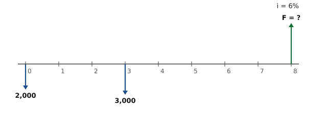
1.52 مشروع يعطي 5,000 دينار في نهاية السنة 2، و7,000 دينار في نهاية السنة 4، و4,000 دينار في نهاية السنة 7. ما القيمة الحالية بنسبة 10%؟
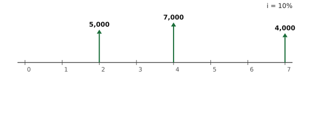
1.53 اقترض أحمد 3,000 دينار بفائدة 7% سنويا، وسدد 1,000 دينار في نهاية السنة الأولى. كم يجب أن يدفع في نهاية السنة الخامسة ليغلق القرض؟
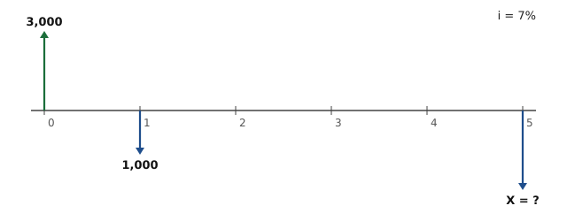
1.54 اقترض شخص 100,000 دينار بفائدة 6%، ويريد سداده بدفعتين في نهاية السنتين 3 و6. الدفعة الأولى تساوي نصف الثانية. أوجد الدفعتين.
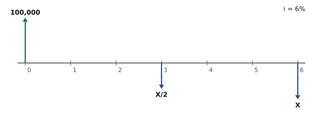
1.55 اقترض شخص 100,000 دينار بفائدة 6%، ويريد سداده بثلاث دفعات في نهاية السنوات 3 و6 و9. الدفعتان الأولى والثالثة كل منهما نصف الدفعة الثانية. أوجد الدفعات.
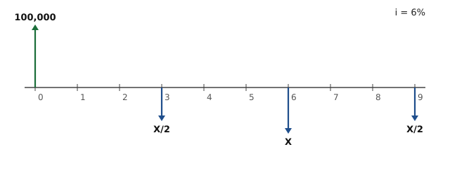
1.56 على شركة دفعتان، 4,000 دينار في نهاية السنة 1 و6,000 دينار في نهاية السنة 6. تريد استبدالهما بدفعة واحدة في نهاية السنة 3. ما مبلغها بنسبة 8%؟
1.57 أودع طالب 3,000 دينار اليوم، ويريد أن يصبح رصيده 12,000 دينار في نهاية السنة 7. كم يجب أن يودع في نهاية السنة 2؟ الفائدة 7%.
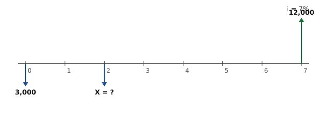
1.58 احسب القيمة المكافئة للتدفقات التالية في السنة 3، بنسبة 5% سنويا. حل بالجداول وبـ Excel.
| السنة | 0 | 1 | 2 | 3 | 4 | 5 | 6 | 7 | 8 | 9 |
|---|---|---|---|---|---|---|---|---|---|---|
| التدفق | -50 | -90 | -105 | 0 | 0 | -125 | -175 | -50 | 0 | -170 |
1.59 أعد المسألة السابقة بالأرقام الأصلية في الكتاب، بنسبة 7% ثم 9%. قارن النتائج. لماذا تقل القيمة المكافئة بالقيمة المطلقة عندما ترتفع الفائدة في هذه المسألة؟
1.60 قرض 40,000 دينار بفائدة 8% يسدد بدفعتين متساويتين في نهاية السنتين 2 و5. ما قيمة كل دفعة؟
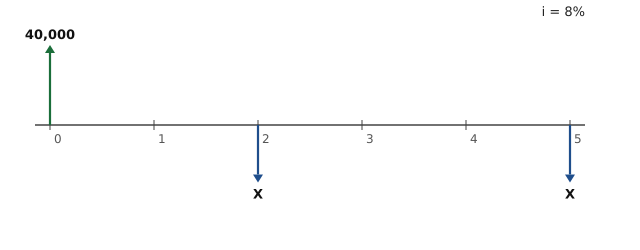
1.61 تختار شركة بين خطتي سداد لنفس الدين. الأولى 5,000 دينار في نهاية السنة 1 و9,000 دينار في نهاية السنة 3. الثانية 6,000 دينار في نهاية السنة 2 و8,500 دينار في نهاية السنة 4. الفائدة 9%. أي الخطتين أقل تكلفة؟
1.62 على شخص دفعة 10,000 دينار مستحقة في نهاية السنة 5. يريد أن يدفعها مبكرا في نهاية السنة 2. كم يدفع إذا كانت الفائدة 7%؟
1.63 دفعة 8,000 دينار مستحقة في نهاية السنة 2، واتفق الطرفان على تأجيلها إلى نهاية السنة 5 بفائدة 6%. ما المبلغ المؤجل؟
1.64 اشترى مزارع جرارا بقرض 70,000 دينار بفائدة 7.5%. دفع 20,000 دينار في نهاية السنة 2. كم يدفع في نهاية السنة 6 ليغلق القرض؟
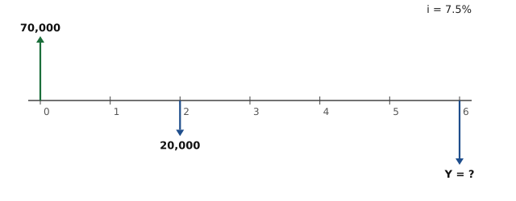
1.65 أودع شخص 25,000 دينار في حساب بفائدة 6%. سحب 8,000 دينار في نهاية السنة 3. كم يكون رصيده في نهاية السنة 7؟
1.66 تكاليف صيانة آلة في نهاية السنوات 1 إلى 4 هي 1,500 و2,200 و1,800 و2,600 دينار. ما قيمتها المكافئة في نهاية السنة 4 بنسبة 10%؟
1.67 سعر آلة 30,000 دينار. دفع المشتري 8,000 دينار نقدا، ويسدد الباقي بدفعتين متساويتين في نهاية السنتين 1 و3 بفائدة 9%. ما قيمة الدفعة؟
1.68 سعر آلة 30,000 دينار. البائع يقبل دفعة نقدية اليوم، ثم دفعتين قيمة كل منهما 12,000 دينار في نهاية السنتين 1 و3، بفائدة 9%. ما الدفعة النقدية المطلوبة؟
1.69 قرض 50,000 دينار بفائدة 7% يسدد بثلاث دفعات متساوية في نهاية السنوات 2 و4 و6. ما قيمة الدفعة؟
1.70 يريد شخص أن يجمع 30,000 دينار في نهاية السنة 8، بثلاث إيداعات متساوية اليوم وفي نهاية السنتين 2 و4. ما قيمة الإيداع بفائدة 6%؟
1.71 مشروع يكلف 80,000 دينار اليوم، ويعطي 30,000 و40,000 و35,000 دينار في نهاية السنوات 1 و2 و3. بحد أدنى للعائد 12%، ما صافي القيمة الحالية؟ هل المشروع مقبول؟
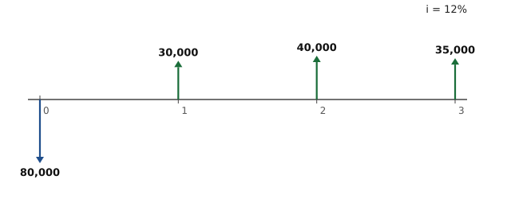
1.72 ثلاث دفعات 3,000 و5,000 و4,000 دينار في نهاية السنوات 2 و5 و8. احسب قيمتها المكافئة في السنة 0، ثم في السنة 10 من جواب السنة 0. الفائدة 8%.
1.73 عند أي نسبة فائدة يتكافأ مبلغ 10,000 دينار اليوم ومبلغ 13,500 دينار بعد 4 سنوات؟
1.74 قارن مبلغ 15,000 دينار اليوم ومبلغ 22,000 دينار بعد 5 سنوات، بنسبة 7%، في السنة 0 ثم في السنة 5. هل يتغير القرار؟
1.75 أودعت مهندسة 20,000 دينار اليوم، ثم أودعت 2,000 دينار في نهاية السنة 2، وسحبت 3,000 دينار في نهاية السنة 5. كم يكون رصيدها في نهاية السنة 6 بفائدة 5%؟
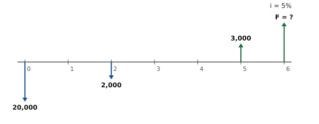
1.76 اشترى مزارع قطعة أرض بمبلغ 50,000 دينار وباعها بعد 6 سنوات بمبلغ 90,000 دينار. ما نسبة العائد السنوية؟ حل بالمعادلة وبالدالة RATE.
1.77 كم سنة يحتاج المبلغ ليصبح ثلاثة أضعاف بفائدة 9% سنويا؟ حل بالمعادلة وبالدالة NPER.
1.78 كم سنة يحتاج مبلغ 2,000 دينار ليصبح 3,500 دينار بعائد 7%؟ في نهاية أي سنة يتجاوز الرصيد الهدف؟
1.79 قارن عدد سنوات التضاعف الدقيق بقاعدة 72 عند نسبة 6%. ما الخطأ النسبي للقاعدة؟
1.80 اشترى مستثمر سندا بمبلغ 9,200 دينار، يسترد منه 12,000 دينار بعد 5 سنوات ولا يدفع شيئا قبل ذلك. ما العائد السنوي؟
1.81 كان مؤشر أسعار المستهلك في فلسطين 100.50 في سنة 1996، و206.93 في سنة 2021. ما متوسط الارتفاع السنوي في الأسعار؟
1.82 لدى صندوق ادخار 120,000 دينار. متى يصل إلى 150,000 دينار إذا نما بنسبة 4% سنويا؟
1.83 محل يعرض جهازا بسعر 800 دينار نقدا، أو 1,000 دينار تدفع دفعة واحدة بعد سنتين. ما نسبة الفائدة التي يأخذها المحل ضمنيا؟
1.84 ارتفعت قيمة شقة من 60,000 دينار إلى 75,000 دينار خلال 4 سنوات. صديقك يقول إن العائد السنوي 6.25% لأنه قسم الزيادة الكلية على عدد السنوات. هل هو محق؟ ما العائد الصحيح؟
1.85 بنسبة 12%، كم سنة يحتاج المبلغ ليتضاعف؟ ليصبح أربعة أضعاف؟ ثمانية أضعاف؟ ماذا تلاحظ؟
1.86 أصبحت وديعة 10,000 دينار تساوي 16,105.10 دينار بعد 5 سنوات. ما نسبة الفائدة؟ تحقق من جوابك في جدول المعاملات.
1.87 يريد شخص أن يضاعف مبلغ 5,000 دينار. كم سنة يوفر إذا استثمر بعائد 8% بدل 6%؟
1.88 مبلغ 1,000 دينار أصبح 1,260 دينار بعد 3 سنوات. ما النسبة السنوية إذا كانت الفائدة مركبة؟ وإذا كانت بسيطة؟
1.89 كم سنة يحتاج 3,000 دينار ليصبح 4,500 دينار بنسبة 5%؟ وكم إذا تضاعفت النسبة؟ هل تنقص المدة إلى النصف بالضبط؟
1.90 استثمار في مستودع يكلف 250,000 دينار، ويتوقع بيعه بعد 7 سنوات بمبلغ 400,000 دينار. الحد الأدنى للعائد في الشركة 8%. ما عائد الاستثمار؟ هل هو مقبول؟
حل هذه المسائل بجدول في Excel أو ببرنامج Python، وليس باليد.
1.91 ابن جدولا في Excel للرصيد سنة بسنة لمبلغ 10,000 دينار بفائدة 7% لمدة 30 سنة. ما الرصيد بعد 10 و20 و30 سنة؟
1.92 ابن جدولا في Excel يبين قيمة 5,000 دينار بعد 10 سنوات عند النسب 4% و8% و12%. اكتب الصيغة مرة واحدة واسحبها.
1.93 اكتب برنامج Python يطبع الرصيد سنة بسنة لمبلغ 10,000 دينار بفائدة 7% لمدة 10 سنوات. ما الرصيد في السنة العاشرة؟
1.94 اكتب دالة Python اسمها years_to_double تأخذ نسبة الفائدة وتعيد عدد سنوات التضاعف. استخدمها للنسب 5% و10% و15%.
1.95 احسب القيمة الحالية للتدفقات التالية بنسبة 8% بالدالة NPV في Excel، ثم بمكتبة numpy_financial.
| السنة | 0 | 1 | 2 | 3 | 4 | 5 |
|---|---|---|---|---|---|---|
| التدفق | -20,000 | 5,000 | 6,000 | 0 | 7,000 | 9,000 |
1.96 استثمار 15,000 دينار يصبح 24,000 دينار. احسب بالدالة RATE نسبة العائد إذا تحقق ذلك خلال 5 أو 8 أو 12 سنة.
1.97 ابن جدول بيانات بصفين وعمودين يبين القيمة الحالية لمبلغ 20,000 دينار عند النسبتين 5% و10%، وبعد 5 و10 سنوات. اكتب صيغة واحدة تسحب في الاتجاهين.
1.98 حل المسألة التالية بـ Goal Seek في Excel، ثم تحقق بـ Python. قرض 60,000 دينار بفائدة 7% يسدد بدفعتين في نهاية السنتين 2 و5، الأولى نصف الثانية.
1.99 ارسم في Excel أو Python منحنى قيمة 1,000 دينار لمدة 30 سنة بنسبة 8%، بالفائدة البسيطة والمركبة على نفس الرسم. صف شكل كل منحنى.
1.100 احسب القيمة المستقبلية لمبلغ 25,000 دينار بعد 7 سنوات بنسبة 9% بأربع طرق، وتأكد أنها تعطي نفس الجواب. الطرق هي القانون، والدالة FV في Excel، وقانون مكتوب في Python، والدالة fv في numpy_financial.
كل خيار خاطئ في هذا الجزء مبني على خطأ يقع فيه الطلاب فعلا. إذا اخترت خيارا خاطئا، ابحث عن الخطأ في طريقتك.
1.101 ما قيمة 5,000 دينار بعد 5 سنوات بفائدة مركبة 8%؟
أ) 7,000.00 دينار
ب) 7,346.64 دينار
ج) 3,402.92 دينار
د) 27,000.00 دينار
1.102 ما القيمة الحالية لمبلغ 10,000 دينار بعد 4 سنوات بنسبة 7%؟
أ) 13,107.96 دينار
ب) 7,200.00 دينار
ج) 7,628.95 دينار
د) 7,812.50 دينار
1.103 أي الصيغ التالية تعطي القيمة المستقبلية لمبلغ 2000 دينار بعد 5 سنوات بنسبة 6% بإشارة موجبة؟
1: =FV(6%, 5, 0, 2000)
2: =FV(6%, 5, 0, -2000)
3: =FV(5, 6%, 0, -2000)
4: =FV(6%, 5, -2000)أ) الصيغة 1
ب) الصيغة 2
ج) الصيغة 3
د) الصيغة 4
1.104 كم سنة تقريبا يحتاج المبلغ ليتضاعف بنسبة 9%؟
أ) 11.11 سنة
ب) 22.22 سنة
ج) 8.04 سنة
د) 6.48 سنة
1.105 نقل طالب مبلغا 3000 دينار من السنة 6 إلى السنة 2 بنسبة 8%. أي معامل يستخدم؟
أ) المعامل 1
ب) المعامل 2
ج) المعامل 3
د) المعامل 4
1.106 أودع شخص 1,000 دينار اليوم و1,000 دينار في نهاية السنة 3. ما الرصيد في نهاية السنة 5 بنسبة 10%؟
أ) 3,221.02 دينار
ب) 2,820.51 دينار
ج) 2,420.00 دينار
د) 2,000.00 دينار
1.107 أي العبارات التالية صحيحة دائما ما دامت نسبة الفائدة موجبة؟
أ) معامل القيمة الحالية P/F أكبر من 1
ب) معامل القيمة المستقبلية F/P يقل كلما زاد عدد السنوات
ج) معامل القيمة الحالية P/F يقل كلما زادت نسبة الفائدة
د) معامل القيمة المستقبلية ضعف معامل القيمة الحالية
1.108 مبلغ 4,000 دينار أصبح 6,000 دينار بعد 5 سنوات. ما نسبة العائد السنوية المركبة؟
أ) 10.00%
ب) 50.00%
ج) 8.45%
د) 20.00%
1.109 في مخطط التدفق النقدي لقرض من وجهة نظر المقترض، أين يقع السهم الذي يمثل مبلغ القرض؟
أ) للأسفل في السنة 0
ب) للأعلى في السنة 0
ج) للأعلى في السنة الأخيرة
د) للأسفل في السنة الأخيرة
1.110 عرض أول 12,000 دينار اليوم، وعرض ثان 15,000 دينار بعد 3 سنوات. بنسبة 8%، أي العرضين أفضل؟
أ) العرض الأول، لأن قيمة العرض الثاني اليوم 11,907.48 دينار
ب) العرض الثاني، لأن قيمته اليوم 11,907.48 دينار
كل حالة تجمع أكثر من فكرة من الفصل، وبعضها يضيف فكرة جديدة. اقرأ الحالة كاملة قبل الحل.
1.111 حالة 1.1: قرض دراسة بفترة سماح
اقترضت سارة من صندوق إقراض الطلبة 4,000 دينار في بداية كل سنة دراسية من سنوات دراستها الأربع، أي في السنوات 0 و1 و2 و3. الصندوق يحسب فائدة 5% سنويا أثناء الدراسة. عند التخرج في نهاية السنة 4 ترتفع الفائدة إلى 8% سنويا. عرض عليها الصندوق طريقتين للسداد:
(أ) ارسم مخطط التدفق النقدي. (ب) ما رصيد الدين عند التخرج؟ (ج) ما الدفعة في الطريقة الأولى؟ (د) ما الدفعتان في الطريقة الثانية؟ (هـ) سارة تستطيع استثمار مالها بعائد 8% أيضا. هل تختلف الطريقتان بالنسبة لها؟ (و) ما متوسط النسبة السنوية التي دفعتها على القرض في الطريقة الأولى؟
1.112 حالة 1.2: عرضان لشراء أرض في نابلس
يملك خالد قطعة أرض، وتلقى عرضين لشرائها:
(أ) خالد يستطيع استثمار المال بعائد 6% سنويا. أي العرضين أفضل له؟ (ب) أعد الحل بعائد 10%. (ج) عند أي عائد يتساوى العرضان؟ (د) خالد يقول إن العرض ب أفضل لأن مجموعه 115,000 دينار. ما الخطأ في كلامه؟ (هـ) ما المخاطرة التي يتحملها خالد في العرض ب ولا تظهر في الحساب؟
1.113 حالة 1.3: صندوق ادخار بنسبة تتغير
أودعت نقابة المهندسين 20,000 دينار في صندوق ادخار لأحد أعضائها. الصندوق أعطى 5% سنويا في السنوات الأربع الأولى، ثم 7% سنويا في السنوات الست التالية.
(أ) ما رصيد الصندوق بعد 10 سنوات؟ (ب) ما النسبة السنوية الثابتة التي تعطي نفس الرصيد؟ (ج) زميل حسب متوسط النسبة بأخذ متوسط النسبتين مرجحا بعدد السنوات. ما المتوسط الذي حسبه؟ وما الرصيد الذي يعطيه؟ لماذا يختلف؟ (د) على الصندوق التزام بدفع 50,000 دينار بعد 10 سنوات. ما القيمة الحالية لهذا الالتزام بنفس جدول النسب؟ (هـ) هل يتغير رصيد السنة 10 لو جاءت النسبة 7% أولا ثم 5%؟
هذا الفصل يقابل الفصول التالية في الكتب الثلاثة. تفاصيل الطبعات في الملحق I.
| الكتاب | الفصل | عنوان الفصل |
|---|---|---|
| Park | 1 | Engineering Economic Decisions |
| Park | 3 | Interest Rate and Economic Equivalence |
| Blank & Tarquin | 1 | Foundations of Engineering Economy |
| Blank & Tarquin | 2 | Factors: How Time and Interest Affect Money |
| Sullivan et al. | 1 | Introduction to Engineering Economy |
| Sullivan et al. | 4 | The Time Value of Money |